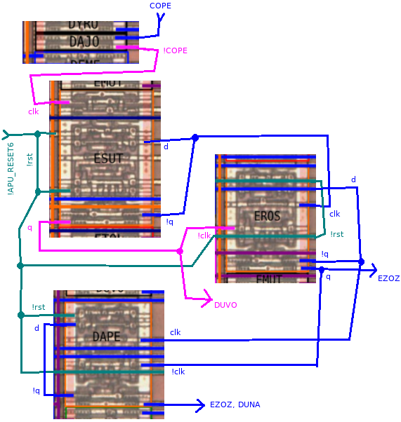
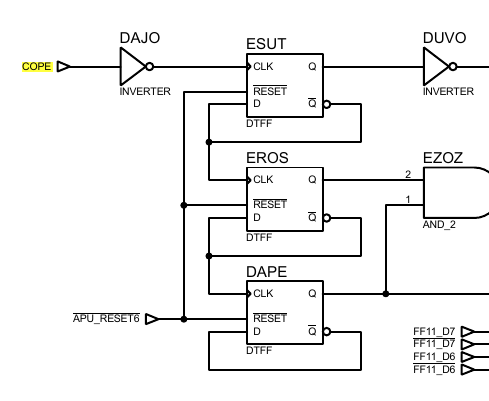
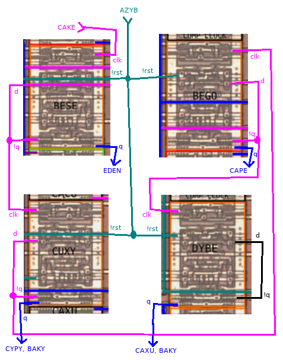
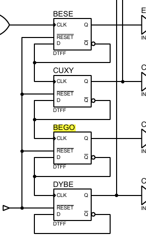

This work is licensed under a Creative Commons Attribution-ShareAlike 4.0 International License.
This document provides information about the cells found in the Gameboy DMG-CPU-B die shot. It builds on the work of Furrtek, the information found in his DMG-CPU-Inside repository.
I will try to provide descriptions for how I determine the polarity of some of the cells clock inputs. I'm writing it down, because I constantly question my assumptions, whenever I discover a new part of the schematic that makes no sense to me at first. This way I don't have to go through this anew each time.
For a reference of all the cells see here.
Please report any errors I made here.
The clock polarity of the variant B of DFFR cells can be inferred using these cells:
 |
 |
This is a 3 bit counter implemented like this: The clock inputs of EROS are driven by q and !q of ESUT. The clock inputs of DAPE are driven by the outputs of EROS. We can determine the polarity of q and !q immediately, because each cell has its !q output routed into its own d input. So each time they get clocked they invert themselfes. That's how you count! It wouldn't make sense to feed the q output into d, because then the content of the FF would never change. Now that we have established the output polarity, let's move on to the clocks.
The next higher bit in a counter has to toggle whenever the previous bit changes back from 1 to 0. In other words: When q falls and !q rises. That is what we see in the picture above: !Q (the positive edge) is connected to the clk input and q (the negative edge) is connected to the !clk input.
Take note that the least significant bit of this counter (ESUT) is a B+ variant. We can't determine it's clock polarity from this circuit, but we can use this one.
CANO, CAGY and DYVE are another example of the same type of 3 bit counter.
The clock polarity of the variant B+ of DFFR cells can be inferred using these cells:
 |
 |
This is a 4 bit counter implemented like this: The !q output of BESE is driving the clock input of CUXY. The !q output of CUXY is driving the clock input of BEGO. And finally the !q output of BEGO is driving the clock input of DYBE. We can determine the polarity of q and !q immediately, because each cell has its !q output routed into its own d input. So each time they get clocked they invert themselfes. It wouldn't make sense to feed the q output into d, because then the content of the FF would never change.
The next higher bit in a counter has to toggle whenever the previous bit changes back from 1 to 0. In other words: When q falls and !q rises. In the picture above, the !q output (the positive edge) is connected to the clk input, so these FFs will have to trigger on the positive edge. There is not a single instance of this B+ variant that has their clock extension part at the top connected differently, so they all are pos-edged.
The clock polarity of the DFFSR cells can be easily inferred by looking at the interrupt flags register. All the interrupt signals are active high and are routed directly into the clock input of DFFSRs. Case closed.
This work is licensed under a Creative Commons Attribution-ShareAlike 4.0 International License.